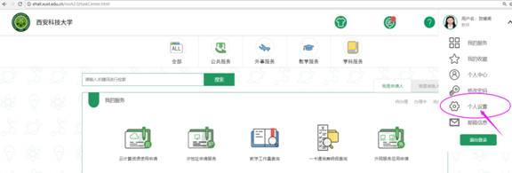

解密统一身份认证账号
一把直达各业务系统大门的钥匙，你值得拥有
1、统一身份认证账号是个什么鬼？
大学校园，一切如此美好（帅哥美女一大把），but这么多 VPN、西科E站、网络在线教学平台系统、学工系统、离校系统、网络账号、一卡通系统、云桌面、云盘、数字化校园门户。。。。这多么账号密码需要记住？好难，臣妾做不到。
福音来了，基于单点登录技术，构建一个统一身份认证服务平台，有效地整合校园网络中所有的应用系统和资源，提供统一入口，用户只进行一次登录，就可以实现应用漫游，访问所有被授权的应用系统。简而言之，同学们只需记住一个用户名密码即可享用各个系统资源且实现身份自助服务。
2、这一个神通广大的用户名账号长什么样？
其实我很简单，很单纯的哦。
我的名字就是同学们的学号/工号（如：1503070403）密码默认同学们的 身份证后六位（其实，好多宝宝已经修改过哦）
如果您是老师那就是工号（如：004744） 密码默认也是 身份证后六位。
3、如何拥有这么神奇的账号？
从同学们进校的时候，我就自己产生了。如果您登陆有问题可联系我们的美女老师们，查询账号开通情况029-85583127 85588017或者 QQ：2218292238（下图可扫二维码）
4、如何使用这个账号干一番大事情？
登录页有彩蛋哦（告诉你吧， 右上角的 “用户服务”， 涵盖了好多网络服务小锦囊）登录进来后，下面的“业务直通车”，您就可以随意进出了，就是这么方便………
5、首次登陆注意事项
同学们第一次登录进去，系统需要记录您的一些信息（不用担心，密级很高），以备您忘记密码的时候可以找回我。
首次登陆必须完善个人资料后，点击保存；不然忘记密码没法找回和不能快捷登录， 这是个过不去的坎，必须完善，不要给自己后面挖坑哦。
6、如何修改个人资料和密码？
如果同学们因种种原因，需要修改个人的信息 （ 密保问题、邮箱、手机、QQ、微信等）， 点击 http://ids.xust.edu.cn/authserver/index.do 或http://ehall.xust.edu.cn中的“个人设置”
在这里你可以修改个人资料 （密保问题、邮箱、手机、QQ、微信等） ，还可以 修改密码 ，同时可以查询自己的登录轨迹情况，以及进行安全设置，对安全性要求高可以设置 二次验证 等。


7、忘记密码，如何找回密码？
如果同学们们因种种原因不小心忘记了密码，需要找回，可以登录页面“忘记密码”
通过 问题找回、邮箱找回、手机找回 三种方式找回密码。（前提是同学们们首次登录已经填写了这些信息，如果没有填写可以按照第6点操作或者联系管理员第2点）
8、新功能：手机验证码、QQ、微信扫码登录。
现在的账户太多，用户名和密码真是多啊，没关系，我们有大招，现在有多种登录方式供同学们选择！
9、特别提示
校园网（含无线WiFi）、VPN、上网认证账号、云桌面、云平台、移动校园已和校园统一身份认证平台完成对接，各位同学可以使用统一身份认证账户进行登陆。